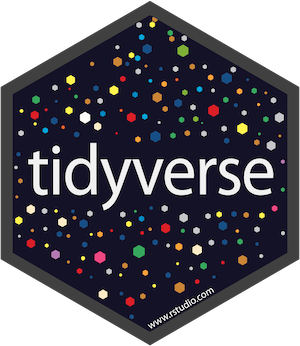
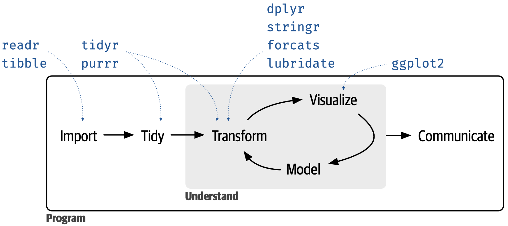
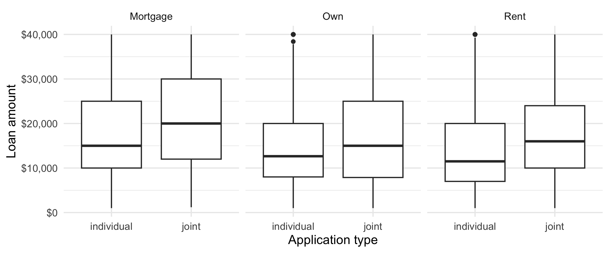
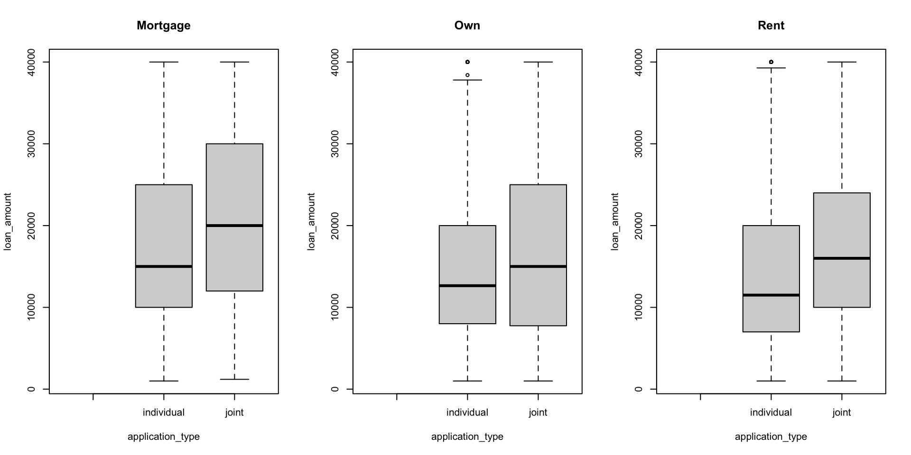
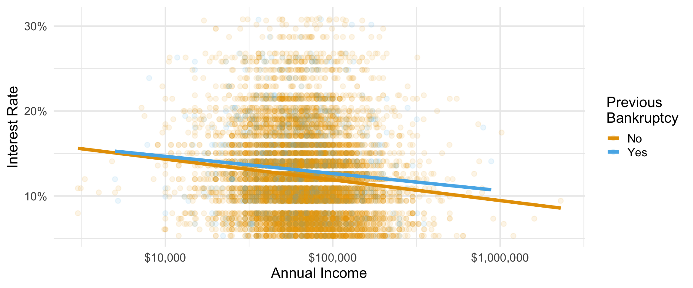
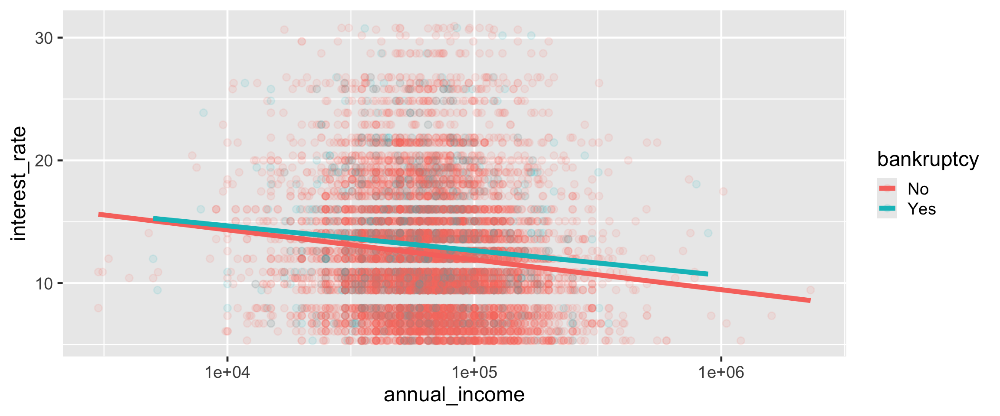
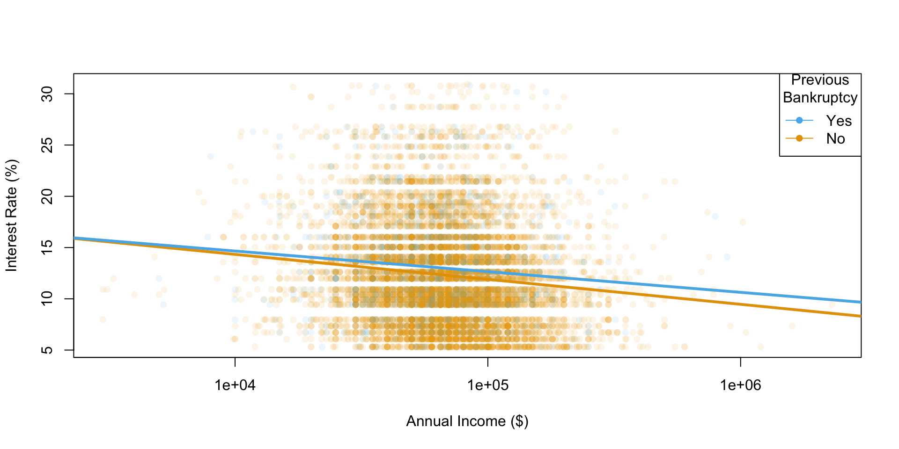
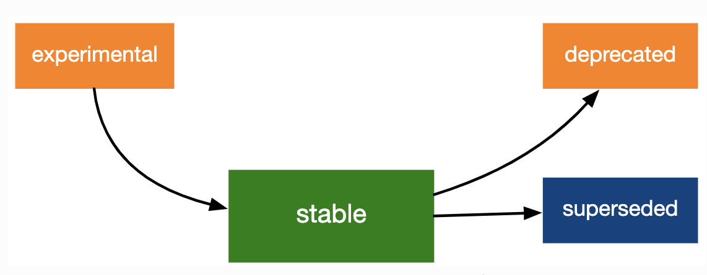
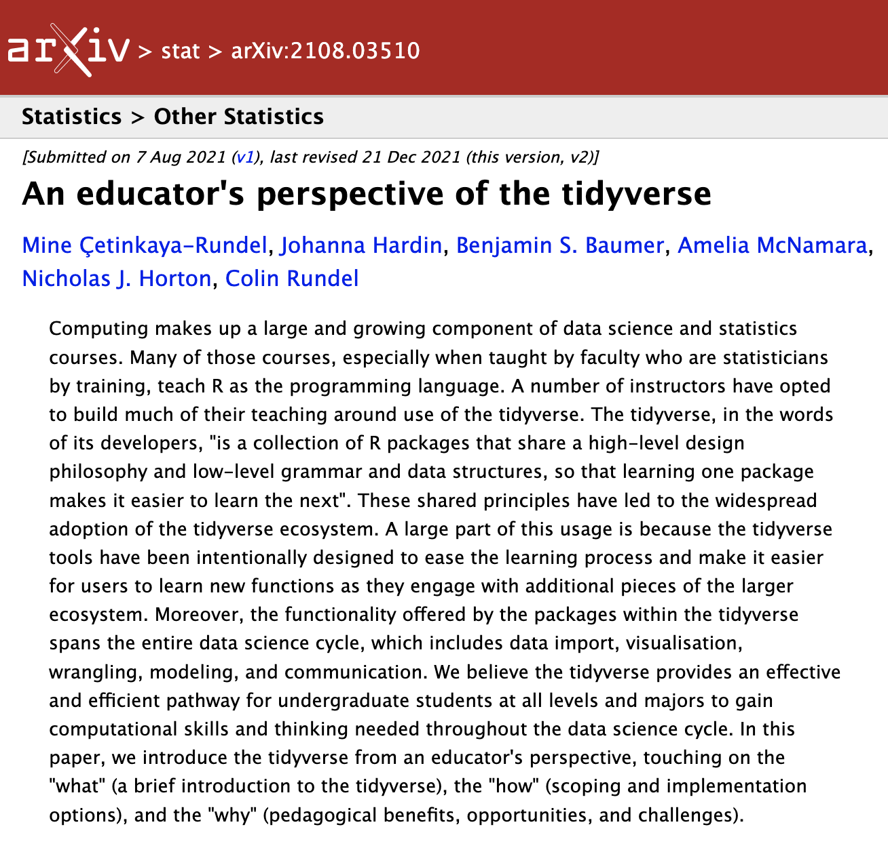

library(tidyverse)
library(openintro)
loans <- loans_full_schema %>%
mutate(
homeownership = str_to_title(homeownership),
bankruptcy = if_else(public_record_bankrupt >= 1, "Yes", "No")
) %>%
filter(annual_income >= 10) %>%
select(
loan_amount, homeownership, bankruptcy,
application_type, annual_income, interest_rate
)an educator’s perspective of the tidyverse
bit.ly/tidyperspective-dagstat
mine çetinkaya-rundel
introduction
collaborators
- Johanna Hardin, Pomona College
- Benjamin S. Baumer, Smith College
- Amelia McNamara, University of St Thomas
- Nicholas J. Horton, Amherst College
- Colin W. Rundel, Duke University
setting the scene
Assumption 1:
Teach authentic tools
Assumption 2:
Teach R as the authentic tool
takeaway
The tidyverse provides an effective and efficient pathway for undergraduate students at all levels and majors to gain computational skills and thinking needed throughout the data science cycle.
principles of the tidyverse
tidyverse
- meta R package that loads eight core packages when invoked and also bundles numerous other packages upon installation
- tidyverse packages share a design philosophy, common grammar, and data structures


setup
Data: Thousands of loans made through the Lending Club, a peer-to-peer lending platform available in the openintro package, with a few modifications.
start with a data frame
# A tibble: 9,976 × 6
loan_amount homeownership bankruptcy application_type annual_income
<int> <chr> <chr> <fct> <dbl>
1 28000 Mortgage No individual 90000
2 5000 Rent Yes individual 40000
3 2000 Rent No individual 40000
4 21600 Rent No individual 30000
5 23000 Rent No joint 35000
6 5000 Own No individual 34000
# ℹ 9,970 more rows
# ℹ 1 more variable: interest_rate <dbl>tidy data
- Each variable forms a column
- Each observation forms a row
- Each type of observational unit forms a table
task: calculate a summary statistic
Calculate the mean loan amount.
# A tibble: 9,976 × 6
loan_amount homeownership bankruptcy application_type annual_income
<int> <chr> <chr> <fct> <dbl>
1 28000 Mortgage No individual 90000
2 5000 Rent Yes individual 40000
3 2000 Rent No individual 40000
4 21600 Rent No individual 30000
5 23000 Rent No joint 35000
6 5000 Own No individual 34000
# ℹ 9,970 more rows
# ℹ 1 more variable: interest_rate <dbl>Error: 找不到物件 'loan_amount'accessing a variable
Approach 1: With attach():
Not recommended. What if you had another data frame you’re working with concurrently called car_loans that also had a variable called loan_amount in it?
accessing a variable
Approach 2: Using $:
accessing a variable
Approach 4: The tidyverse approach:
# A tibble: 1 × 1
mean_loan_amount
<dbl>
1 16358.- More verbose
- But also more expressive and extensible
the tidyverse approach
tidyverse functions take a
dataargument that allows them to localize computations inside the specified data framedoes not muddy the concept of what is in the current environment: variables always accessed from within in a data frame without the use of an additional function (like
with()) or quotation marks, never as a vector
teaching with the tidyverse
task: grouped summary
Based on the applicants’ home ownership status, compute the average loan amount and the number of applicants. Display the results in descending order of average loan amount.
| Homeownership | Number of applicants | Average loan amount |
|---|---|---|
| Mortgage | $18,132 | 4,778 |
| Own | $15,665 | 1,350 |
| Rent | $14,396 | 3,848 |
break it down I
Based on the applicants’ home ownership status, compute the average loan amount and the number of applicants. Display the results in descending order of average loan amount.
# A tibble: 9,976 × 6
loan_amount homeownership bankruptcy application_type annual_income
<int> <chr> <chr> <fct> <dbl>
1 28000 Mortgage No individual 90000
2 5000 Rent Yes individual 40000
3 2000 Rent No individual 40000
4 21600 Rent No individual 30000
5 23000 Rent No joint 35000
6 5000 Own No individual 34000
# ℹ 9,970 more rows
# ℹ 1 more variable: interest_rate <dbl>break it down II
Based on the applicants’ home ownership status, compute the average loan amount and the number of applicants. Display the results in descending order of average loan amount.
[input] data frame
# A tibble: 9,976 × 6
# Groups: homeownership [3]
loan_amount homeownership bankruptcy application_type annual_income
<int> <chr> <chr> <fct> <dbl>
1 28000 Mortgage No individual 90000
2 5000 Rent Yes individual 40000
3 2000 Rent No individual 40000
4 21600 Rent No individual 30000
5 23000 Rent No joint 35000
6 5000 Own No individual 34000
# ℹ 9,970 more rows
# ℹ 1 more variable: interest_rate <dbl>data frame [output]
break it down III
Based on the applicants’ home ownership status, compute the average loan amount and the number of applicants. Display the results in descending order of average loan amount.
break it down IV
Based on the applicants’ home ownership status, compute the average loan amount and the number of applicants. Display the results in descending order of average loan amount.
break it down V
Based on the applicants’ home ownership status, compute the average loan amount and the number of applicants. Display the results in descending order of average loan amount.
putting it back together
[input] data frame
# A tibble: 3 × 3
homeownership avg_loan_amount n_applicants
<chr> <dbl> <int>
1 Mortgage 18132. 4778
2 Own 15665. 1350
3 Rent 14396. 3848[output] data frame
grouped summary with aggregate()
grouped summary with aggregate()
homeownership avg_loan_amount
1 Mortgage 18132.45
2 Own 15665.44
3 Rent 14396.44grouped summary with aggregate()
- Good: Inputs and outputs are data frames
-
Not so good: Need to introduce
formula syntax
passing functions as arguments
merging datasets
square bracket notation for accessing rows
grouped summary with tapply()
Mortgage Own Rent
18132.45 15665.44 14396.44 Not so good:
- passing functions as arguments
- distinguishing between the various
apply()functions - ending up with a new data structure (
array) - reading nested functions
task: data visualization
Create side-by-side box plots that shows the relationship between loan amount and application type, faceted by homeownership.

break it down I

break it down II
break it down III
break it down IV
break it down IV
plotting with ggplot()
- Each layer produces a valid plot
- Faceting by a third variable takes only one new function
plotting with boxplot()
plotting with boxplot()

visualizing a different relationship
Visualize the relationship between interest rate and annual income, conditioned on whether the applicant had a bankruptcy.

plotting with ggplot()

further customizing ggplot()
ggplot(loans,
aes(y = interest_rate, x = annual_income,
color = bankruptcy)) +
geom_point(alpha = 0.1) +
geom_smooth(method = "lm", linewidth = 2, se = FALSE) +
scale_x_log10(labels = scales::label_dollar()) +
scale_y_continuous(labels = scales::label_percent(scale = 1)) +
scale_color_OkabeIto() +
labs(x = "Annual Income", y = "Interest Rate",
color = "Previous\nBankruptcy") +
theme_minimal(base_size = 18)
plotting with plot()
# From the OkabeIto palette
cols = c(No = "#e6a003", Yes = "#57b4e9")
plot(
loans$annual_income,
loans$interest_rate,
pch = 16,
col = adjustcolor(cols[loans$bankruptcy], alpha.f = 0.1),
log = "x",
xlab = "Annual Income ($)",
ylab = "Interest Rate (%)",
xaxp = c(1000, 10000000, 1)
)
lm_b_no = lm(
interest_rate ~ log10(annual_income),
data = loans[loans$bankruptcy == "No",]
)
lm_b_yes = lm(
interest_rate ~ log10(annual_income),
data = loans[loans$bankruptcy == "Yes",]
)
abline(lm_b_no, col = cols["No"], lwd = 3)
abline(lm_b_yes, col = cols["Yes"], lwd = 3)
legend(
"topright",
legend = c("Yes", "No"),
title = "Previous\nBankruptcy",
col = cols[c("Yes", "No")],
pch = 16, lwd = 1
)plotting with plot()

beyond wrangling, summaries, visualizations
Modeling and inference with tidymodels:
A unified interface to modeling functions available in a large variety of packages
Sticking to the data frame in / data frame out paradigm
Guardrails for methodology
pedagogical strengths of the tidyverse
consistency
No matter which approach or tool you use, you should strive to be consistent in the classroom whenever possible
tidyverse offers consistency, something we believe to be of the utmost importance, allowing students to move knowledge about function arguments to their long-term memory
teaching consistently
Challenge: Google and Stack Overflow can be less useful – demo problem solving
Counter-proposition: teach all (or multiple) syntaxes at once – trying to teach two (or more!) syntaxes at once will slow the pace of the course, introduce unnecessary syntactic confusion, and make it harder for students to complete their work.
“Disciplined in what we teach, liberal in what we accept”
mixability
Mix with base R code or code from other packages
In fact, you can’t not mix with base R code!
scalability
Adding a new variable to a visualization or a new summary statistic doesn’t require introducing a numerous functions, interfaces, and data structures
user-centered design
Interfaces designed with user experience (and learning) in mind
Continuous feedback collection and iterative improvements based on user experiences improve functions’ and packages’ usability (and learnability)
readability
Interfaces that are designed to produce readable code
community
The encouraging and inclusive tidyverse community is one of the benefits of the paradigm
Each package comes with a website, each of these websites are similarly laid out, and results of example code are displayed, and extensive vignettes describe how to use various functions from the package together
shared syntax
Get SQL for free with dplyr verbs!
final thoughts
building a curriculum
Start with
library(tidyverse)Teach by learning goals, not packages
keeping up with the tidyverse
Blog posts highlight updates, along with the reasoning behind them and worked examples
-
Lifecycle stages and badges

coda
We are all converts to the tidyverse and have made a conscious choice to use it in our research and our teaching. We each learned R without the tidyverse and have all spent quite a few years teaching without it at a variety of levels from undergraduate introductory statistics courses to graduate statistical computing courses. This paper is a synthesis of the reasons supporting our tidyverse choice, along with benefits and challenges associated with teaching statistics with the tidyverse.
